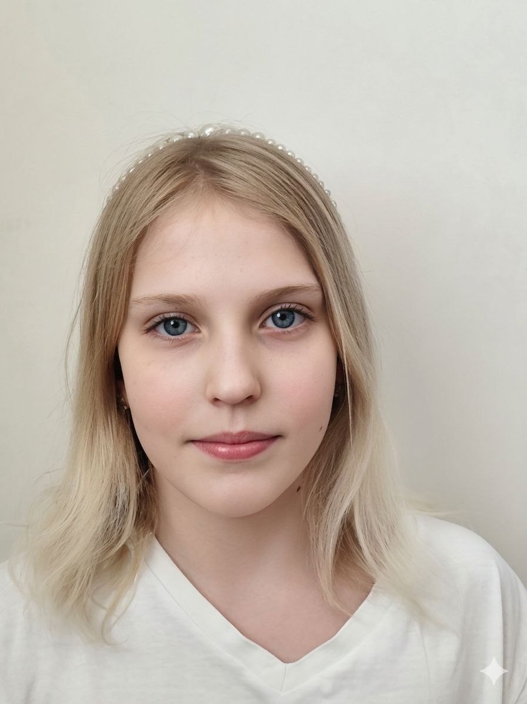
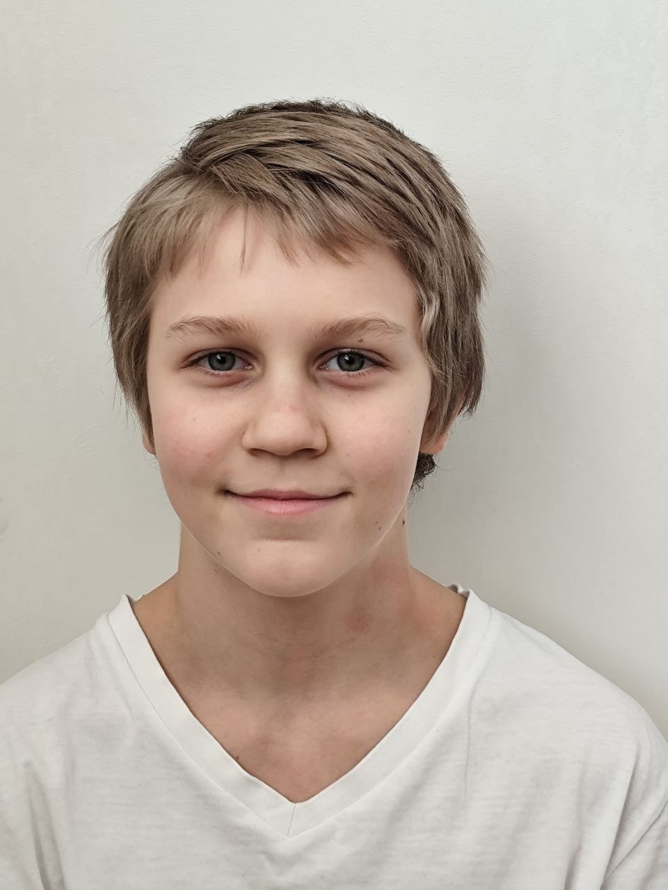

Отслеживание мимикиПОИСК ЛИЦА
Ожидание лица
Выбери, что хочешь анализировать
Камера включится после выбора режима.
Видео обрабатывается в браузере.
Сравнение лиц выполняется локально в браузере. Фотографии не отправляются на сервер.


Для более точного сравнения используй по одному хорошо освещённому портрету анфас на человека. Это экспериментальная демонстрация: ошибки распознавания возможны.
Сначала подключим камеру и подготовим модель.
Сделай выражение и нажми «Далее», когда будешь готов.